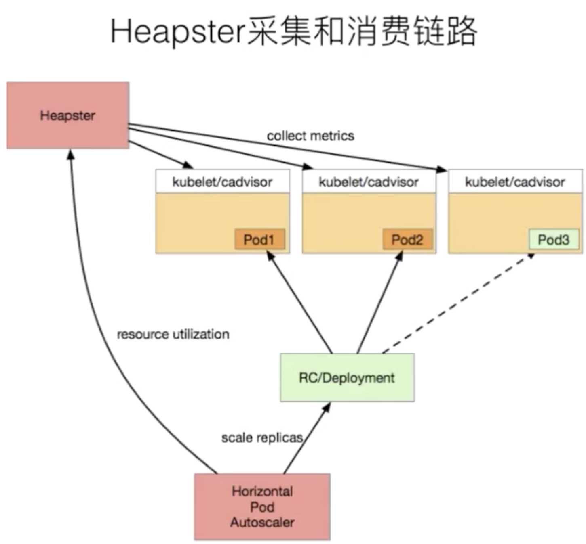
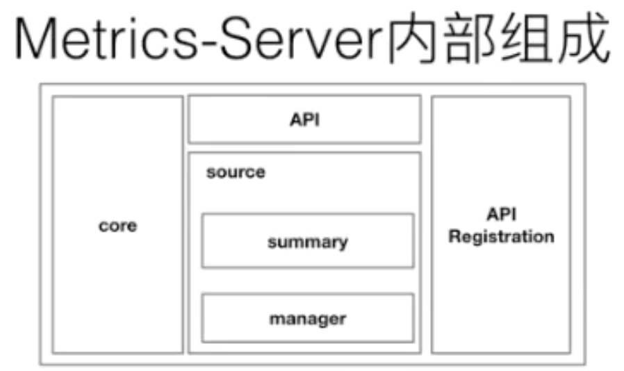
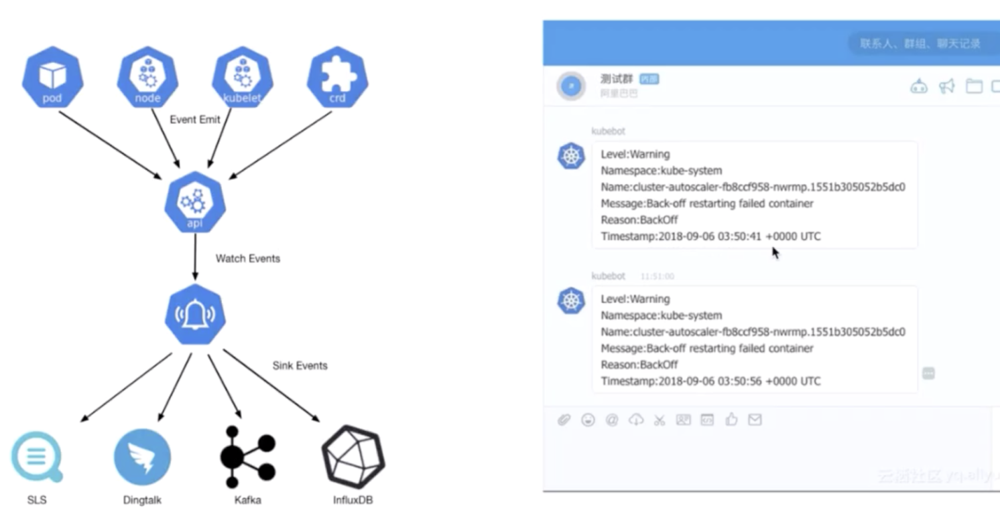
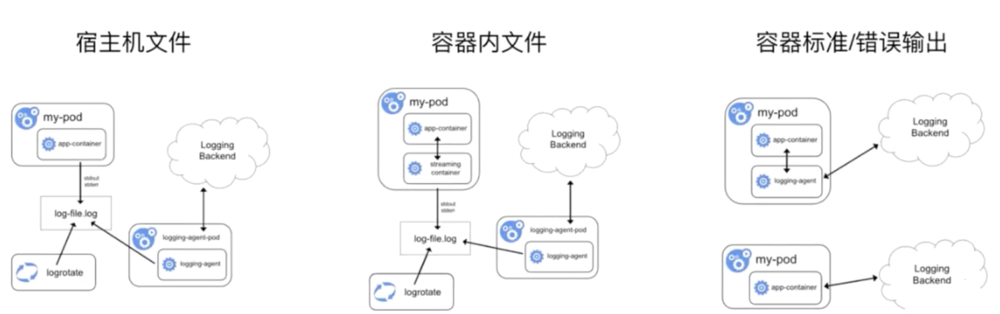

- 01 第一堂“云原生”课.md.html
- 02 容器基本概念.md.html
- 03 Kubernetes 核心概念.md.html
- 04 理解 Pod 和容器设计模式.md.html
- 05 应用编排与管理：核心原理.md.html
- 06 应用编排与管理.md.html
- 07 应用编排与管理：Job & DaemonSet.md.html
- 08 应用配置管理.md.html
- 09 应用存储和持久化数据卷：核心知识.md.html
- 10 应用存储和持久化数据卷：存储快照与拓扑调度(至天).md.html
- 11 可观测性：你的应用健康吗？（莫源）.md.html
- 12 可观测性-监控与日志（莫源）.md.html
- 13 Kubernetes 网络概念及策略控制（叶磊）.md.html
- 14 Kubernetes Service（溪恒）.md.html
- 15 从 0 开始创作云原生应用（殷达）.md.html
- 16 深入解析 Linux 容器（华敏）.md.html
12 可观测性-监控与日志（莫源）
本文主要分为四个部分：
- 在 K8s 中监控和日志的背景信息；
- 在 K8s 中监控方案的演进，以及常见的监控方案的提供；
- 日志采集的一些细节以及常见的日志的开源系统；
- 课程总结，介绍一下阿里云容器服务上面监控和日志的最佳实践。
背景
监控和日志是大型分布式系统的重要基础设施，监控可以帮助开发者查看系统的运行状态，而日志可以协助问题的排查和诊断。
在 Kubernetes 中，监控和日志属于生态的一部分，它并不是核心组件，因此大部分的能力依赖上层的云厂商的适配。Kubernetes 定义了介入的接口标准和规范，任何符合接口标准的组件都可以快速集成。
监控
监控类型
先看一下监控，从监控类型上划分，在 K8s 中可以分成四个不同的类型：
- 资源监控
比较常见的像 CPU、内存、网络这种资源类的一个指标，通常这些指标会以数值、百分比的单位进行统计，是最常见的一个监控方式。这种监控方式在常规的监控里面，类似项目 zabbix telegraph，这些系统都是可以做到的。
- 性能监控
性能监控指的就是 APM 监控，也就是说常见的一些应用性能类的监控指标的检查。通常是通过一些 Hook 的机制在虚拟机层、字节码执行层通过隐式调用，或者是在应用层显示注入，获取更深层次的一个监控指标，一般是用来应用的调优和诊断的。比较常见的类似像 jvm 或者 php 的 Zend Engine，通过一些常见的 Hook 机制，拿到类似像 jvm 里面的 GC 的次数，各种内存代的一个分布以及网络连接数的一些指标，通过这种方式来进行应用的性能诊断和调优。
- 安全监控
安全监控主要是对安全进行的一系列的监控策略，类似像越权管理、安全漏洞扫描等等。
- 事件监控
事件监控是 K8s 中比较另类的一种监控方式。在上一节课中给大家介绍了在 K8s 中的一个设计理念，就是基于状态机的一个状态转换。从正常的状态转换成另一个正常的状态的时候，会发生一个 normal 的事件，而从一个正常状态转换成一个异常状态的时候，会发生一个 warning 的事件。通常情况下，warning 的事件是我们比较关心的，而事件监控就是可以把 normal 的事件或者是 warning 事件离线到一个数据中心，然后通过数据中心的分析以及报警，把相应的一些异常通过像钉钉或者是短信、邮件的方式进行暴露，弥补常规监控的一些缺陷和弊端。
Kubernetes 的监控演进
在早期，也就是 1.10 以前的 K8s 版本。大家都会使用类似像 Heapster 这样的组件来去进行监控的采集，Heapster 的设计原理其实也比较简单。

首先，我们在每一个 Kubernetes 上面有一个包裹好的 cadvisor，这个 cadvisor 是负责数据采集的组件。当 cadvisor 把数据采集完成，Kubernetes 会把 cadvisor 采集到的数据进行包裹，暴露成相应的 API。在早期的时候，实际上是有三种不同的 API：
- 第一种是 summary 接口；
- 第二种是 kubelet 接口；
- 第三种是 Prometheus 接口。
这三种接口，其实对应的数据源都是 cadvisor，只是数据格式有所不同。而在 Heapster 里面，其实支持了 summary 接口和 kubelet 两种数据采集接口，Heapster 会定期去每一个节点拉取数据，在自己的内存里面进行聚合，然后再暴露相应的 service，供上层的消费者进行使用。在 K8s 中比较常见的消费者，类似像 dashboard，或者是 HPA-Controller，它通过调用 service 获取相应的监控数据，来实现相应的弹性伸缩，以及监控数据的一个展示。
这个是以前的一个数据消费链路，这条消费链路看上去很清晰，也没有太多的一个问题，那为什么 Kubernetes 会将 Heapster 放弃掉而转换到 metrics-service 呢？其实这个主要的一个动力来源是由于 Heapster 在做监控数据接口的标准化。为什么要做监控数据接口标准化呢？
- 第一点在于客户的需求是千变万化的，比如说今天用 Heapster 进行了基础数据的一个资源采集，那明天的时候，我想在应用里面暴露在线人数的一个数据接口，放到自己的接口系统里进行数据的一个展现，以及类似像 HPA 的一个数据消费。那这个场景在 Heapster 下能不能做呢？答案是不可以的，所以这就是 Heapster 自身扩展性的弊端；
- 第二点是 Heapster 里面为了保证数据的离线能力，提供了很多的 sink，而这个 sink 包含了类似像 influxdb、sls、钉钉等等一系列 sink。这个 sink 主要做的是把数据采集下来，并且把这个数据离线走，然后很多客户会用 influxdb 做这个数据离线，在 influxdb 上去接入类似像 grafana 监控数据的一个可视化的软件，来实践监控数据的可视化。
但是后来社区发现，这些 sink 很多时候都是没有人来维护的。这也导致整个 Heapster 的项目有很多的 bug，这个 bug 一直存留在社区里面，是没有人修复的，这个也是会给社区的项目的活跃度包括项目的稳定性带来了很多的挑战。
基于这两点原因，K8s 把 Heapster 进行了 break 掉，然后做了一个精简版的监控采集组件，叫做 metrics-server。
上图是 Heapster 内部的一个架构。大家可以发现它分为几个部分，第一个部分是 core 部分，然后上层是有一个通过标准的 http 或者 https 暴露的这个 API。然后中间是 source 的部分，source 部分相当于是采集数据暴露的不同的接口，然后 processor 的部分是进行数据转换以及数据聚合的部分。最后是 sink 部分，sink 部分是负责数据离线的，这个是早期的 Heapster 的一个应用的架构。那到后期的时候呢，K8s 做了这个监控接口的一个标准化，逐渐就把 Heapster 进行了裁剪，转化成了 metrics-server。

目前 0.3.1 版本的 metrics-server 大致的一个结构就变成了上图这样，是非常简单的：有一个 core 层、中间的 source 层，以及简单的 API 层，额外增加了 API Registration 这层。这层的作用就是它可以把相应的数据接口注册到 K8s 的 API server 之上，以后客户不再需要通过这个 API 层去访问 metrics-server，而是可以通过这个 API 注册层，通过 API server 访问 API 注册层，再到 metrics-server。这样的话，真正的数据消费方可能感知到的并不是一个 metrics-server，而是说感知到的是实现了这样一个 API 的具体的实现，而这个实现是 metrics-server。这个就是 metrics-server 改动最大的一个地方。
Kubernetes 的监控接口标准
在 K8s 里面针对于监控，有三种不同的接口标准。它将监控的数据消费能力进行了标准化和解耦，实现了一个与社区的融合，社区里面主要分为三类。
第一类 Resource Metrice
对应的接口是 metrics.k8s.io，主要的实现就是 metrics-server，它提供的是资源的监控，比较常见的是节点级别、pod 级别、namespace 级别、class 级别。这类的监控指标都可以通过 metrics.k8s.io 这个接口获取到。
第二类 Custom Metrics
对应的 API 是 custom.metrics.k8s.io，主要的实现是 Prometheus。它提供的是资源监控和自定义监控，资源监控和上面的资源监控其实是有覆盖关系的，而这个自定义监控指的是：比如应用上面想暴露一个类似像在线人数，或者说调用后面的这个数据库的 MySQL 的慢查询。这些其实都是可以在应用层做自己的定义的，然后并通过标准的 Prometheus 的 client，暴露出相应的 metrics，然后再被 Prometheus 进行采集。
而这类的接口一旦采集上来也是可以通过类似像 custom.metrics.k8s.io 这样一个接口的标准来进行数据消费的，也就是说现在如果以这种方式接入的 Prometheus，那你就可以通过 custom.metrics.k8s.io 这个接口来进行 HPA，进行数据消费。
第三类 External Metrics
External Metrics 其实是比较特殊的一类，因为我们知道 K8s 现在已经成为了云原生接口的一个实现标准。很多时候在云上打交道的是云服务，比如说在一个应用里面用到了前面的是消息队列，后面的是 RBS 数据库。那有时在进行数据消费的时候，同时需要去消费一些云产品的监控指标，类似像消息队列中消息的数目，或者是接入层 SLB 的 connection 数目，SLB 上层的 200 个请求数目等等，这些监控指标。
那怎么去消费呢？也是在 K8s 里面实现了一个标准，就是 external.metrics.k8s.io。主要的实现厂商就是各个云厂商的 provider，通过这个 provider 可以通过云资源的监控指标。在阿里云上面也实现了阿里巴巴 cloud metrics adapter 用来提供这个标准的 external.metrics.k8s.io 的一个实现。
Promethues - 开源社区的监控“标准”
接下来我们来看一个比较常见的开源社区里面的监控方案，就是 Prometheus。Prometheus 为什么说是开源社区的监控标准呢？
- 一是因为首先 Prometheus 是 CNCF 云原生社区的一个毕业项目。然后第二个是现在有越来越多的开源项目都以 Prometheus 作为监控标准，类似说我们比较常见的 Spark、Tensorflow、Flink 这些项目，其实它都有标准的 Prometheus 的采集接口。
- 第二个是对于类似像比较常见的一些数据库、中间件这类的项目，它都有相应的 Prometheus 采集客户端。类似像 ETCD、zookeeper、MySQL 或者说 PostgreSQL，这些其实都有相应的这个 Prometheus 的接口，如果没有的，社区里面也会有相应的 exporter 进行接口的一个实现。
那我们先来看一下 Prometheus 整个的大致一个结构。
上图是 Prometheus 采集的数据链路，它主要可以分为三种不同的数据采集链路。
- 第一种，是这个 push 的方式，就是通过 pushgateway 进行数据采集，然后数据线到 pushgateway，然后 Prometheus 再通过 pull 的方式去 pushgateway 去拉数据。这种采集方式主要应对的场景就是你的这个任务可能是比较短暂的，比如说我们知道 Prometheus，最常见的采集方式是拉模式，那带来一个问题就是，一旦你的数据声明周期短于数据的采集周期，比如我采集周期是 30s，而我这个任务可能运行 15s 就完了。这种场景之下，可能会造成有些数据漏采。对于这种场景最简单的一个做法就是先通过 pushgateway，先把你的 metrics push下来，然后再通过 pull 的方式从 pushgateway 去拉数据，通过这种方式可以做到，短时间的不丢作业任务。
- 第二种是标准的 pull 模式，它是直接通过拉模式去对应的数据的任务上面去拉取数据。
- 第三种是 Prometheus on Prometheus，就是可以通过另一个 Prometheus 来去同步数据到这个 Prometheus。
这是三种 Prometheus 中的采集方式。那从数据源上面，除了标准的静态配置，Prometheus 也支持 service discovery。也就是说可以通过一些服务发现的机制，动态地去发现一些采集对象。在 K8s 里面比较常见的是可以有 Kubernetes 的这种动态发现机制，只需要配置一些 annotation，它就可以自动地来配置采集任务来进行数据采集，是非常方便的。
在报警上面，Prometheus 提供了一个外置组件叫 Alentmanager，它可以将相应的报警信息通过邮件或者短信的方式进行数据的一个告警。在数据消费上面，可以通过上层的 API clients，可以通过 web UI，可以通过 Grafana 进行数据的展现和数据的消费。
总结起来 Prometheus 有如下五个特点：
- 第一个特点就是简介强大的接入标准，开发者只需要实现 Prometheus Client 这样一个接口标准，就可以直接实现数据的一个采集；
- 第二种就是多种的数据采集、离线的方式。可以通过 push 的方式、 pull 的方式、Prometheus on Prometheus的方式来进行数据的采集和离线；
- 第三种就是和 K8s 的兼容；
- 第四种就是丰富的插件机制与生态；
- 第五个是 Prometheus Operator 的一个助力，Prometheus Operator 可能是目前我们见到的所有 Operator 里面做的最复杂的，但是它里面也是把 Prometheus 这种动态能力做到淋漓尽致的一个 Operator，如果在 K8s 里面使用 Prometheus，比较推荐大家使用 Prometheus Operator 的方式来去进行部署和运维。
kube-eventer - Kubernetes 事件离线工具
最后，我们给大家介绍一个 K8s 中的事件离线工具叫做 kube-eventer。kube-eventer 是阿里云容器服务开源出的一个组件，它可以将 K8s 里面，类似像 pod eventer、node eventer、核心组件的 eventer、crd 的 eventer 等等一系列的 eventer，通过 API sever 的这个 watch 机制离线到类似像 SLS、Dingtalk、kafka、InfluxDB，然后通过这种离线的机制进行一个时间的审计、监控和告警，我们现在已经把这个项目开源到 GitHub 上了，大家有兴趣的话可以来看一下这个项目。

那上面这张图其实就是 Dingtalk 的一个报警图。可以看见里面有一个 warning 的事件，这个事件是在 kube-system namespace 之下，具体的这个 pod，大致的一个原因是这个 pod 重启失败了，然后大致 reason 就是 backoff，然后具体发生事件是什么时间。可以通过这个信息来做到一个 Checkups。
日志
日志的场景
接下来给大家来介绍一下在 K8s 里面日志的一个部分。首先我们来看一下日志的场景，日志在 K8s 里面主要分为四个大的场景：
主机内核的日志
- 第一个是主机内核的日志，主机内核日志可以协助开发者进行一些常见的问题与诊断，比如说网栈的异常，类似像我们的 iptables mark，它可以看到有 controller table 这样的一些 message；
- 第二个是驱动异常，比较常见的是一些网络方案里面有的时候可能会出现驱动异常，或者说是类似 GPU 的一些场景，驱动异常可能是比较常见的一些错误；
- 第三个就是文件系统异常，在早期 docker 还不是很成熟的场景之下，overlayfs 或者是 AUFS，实际上是会经常出现问题的。在这些出现问题后，开发者是没有太好的办法来去进行监控和诊断的。这一部分，其实是可以主机内核日志里面来查看到一些异常；
- 再往下是影响节点的一些异常，比如说内核里面的一些 kernel panic，或者是一些 OOM，这些也会在主机日志里面有相应的一些反映。
Runtime 的日志
第二个是 runtime 的日志，比较常见的是 Docker 的一些日志，我们可以通过 docker 的日志来排查类似像删除一些 Pod Hang 这一系列的问题。
核心组件的日志
第三个是核心组件的日志，在 K8s 里面核心组件包含了类似像一些外置的中间件，类似像 etcd，或者像一些内置的组件，类似像 API server、kube-scheduler、controller-manger、kubelet 等等这一系列的组件。而这些组件的日志可以帮我们来看到整个 K8s 集群里面管控面的一个资源的使用量，然后以及目前运行的一个状态是否有一些异常。
还有的就是类似像一些核心的中间件，如 Ingress 这种网络中间件，它可以帮我们来看到整个的一个接入层的一个流量，通过 Ingress 的日志，可以做到一个很好的接入层的一个应用分析。
部署应用的日志
最后是部署应用的日志，可以通过应用的日志来查看业务层的一个状态。比如说可以看业务层有没有 500 的请求？有没有一些 panic？有没有一些异常的错误的访问？那这些其实都可以通过应用日志来进行查看的。
日志的采集
首先我们来看一下日志采集，从采集位置是哪个划分，需要支持如下三种：

- 首先是宿主机文件，这种场景比较常见的是说我的这个容器里面，通过类似像 volume，把日志文件写到了宿主机之上。通过宿主机的日志轮转的策略进行日志的轮转，然后再通过我的宿主机上的这个 agent 进行采集；
- 第二种是容器内有日志文件，那这种常见方式怎么处理呢，比较常见的一个方式是说我通过一个 Sidecar 的 streaming 的 container，转写到 stdout，通过 stdout 写到相应的 log-file，然后再通过本地的一个日志轮转，然后以及外部的一个 agent 采集；
- 第三种我们直接写到 stdout，这种比较常见的一个策略，第一种就是直接我拿这个 agent 去采集到远端，第二种我直接通过类似像一些 sls 的标准 API 采集到远端。
那社区里面其实比较推荐的是使用 **Fluentd **的一个采集方案，Fluentd 是在每一个节点上面都会起相应的 agent，然后这个 agent 会把数据汇集到一个 Fluentd 的一个 server，这个 server 里面可以将数据离线到相应的类似像 elasticsearch，然后再通过 kibana 做展现；或者是离线到 influxdb，然后通过 Grafana 做展现。这个其实是社区里目前比较推荐的一个做法。
总结
最后给大家做一下今天课程的总结，以及给大家介绍一下在阿里云上面监控和日志的最佳实践。在课程开始的时候，给大家介绍了监控和日志并不属于 K8s 里面的核心组件，而大部分是定义了一个标准的一个接口方式，然后通过上层的这个云厂商进行各自的一个适配。
阿里云容器服务监控体系
监控体系组件介绍
首先，我先给大家来介绍一下在阿里云容器服务里面的监控体系，这张图实际上是监控的一个大图。
右侧的四个产品是和监控日志相关比较紧密的四个产品：
sls
第一个是 SLS，就是日志服务，那刚才我们已经提到了在 K8s 里面日志分为很多种不同的采集，比如说有核心组件的日志、接入层的日志、还有应用的日志等等。在阿里云容器服务里面，可以通过 API server 采集到审计的日志，然后可以通过类似像 service mesh 或者 ingress controller 采集到接入层的日志，然后以及相应的应用层采集到应用的日志。
有了这条数据链路之后，其实还不够。因为数据链路只是帮我们做到了一个数据的离线，我们还需要做上层的数据的展现和分析。比如说像审计，可以通过审计日志来看到今天有多少操作、有多少变更、有没有攻击、系统有没有异常。这些都可以通过审计的 Dashboard 来查看。
ARMS
第二个就是应用的一个性能监控。性能监控上面，可以通过这个 ARMS 这样的产品来去进行查看。ARMS 目前支持的 JAVA、PHP 两种语言，可以通过 ARMS 来做应用的一个性能诊断和问题的一个调优。
AHAS
第三个是比较特殊的叫 AHAS。AHAS 是一个架构感知的监控，我们知道在 K8s 里面，很多时候都是通过一些微服的架构进行部署的。微服带来的问题就是组件会变的非常多，组件的副本处也会变的很多。这会带来一个在拓扑管理上面的一个复杂性。
如果我们想要看一个应用在 K8s 中流量的一个走向，或者是针对流量异常的一个排查，其实没有一个很好的可视化是很复杂的。AHAS 的一个作用就是通过网络栈的一个监控，可以绘制出整个 K8s 中应用的一个拓扑关系，然后以及相应的资源监控和网络的带宽监控、流量的监控，以及异常事件的一个诊断。任何如果有架构拓扑感知的一个层面，来实现另一种的监控解决方案。
Cloud Monitor
最后是 Cloud Monitor，也就是基础的云监控。它可以采集标准的 Resource Metrics Monitoring，来进行监控数据的一个展现，可以实现 node、pod 等等监控指标的一个展现和告警。
阿里云增强的功能
这一部分是阿里云在开源上做的增强。首先是 metrics-server，文章开始提到了 metrics-server 做了很多的一个精简。但是从客户的角度来讲，这个精简实际上是把一些功能做了一个裁剪，这将会带来很多不便。比如说有很多客户希望将监控数据离线到类似像 SLS 或者是 influxdb，这种能力实际上用社区的版本是没有办法继续来做的，这个地方阿里云继续保留了常见的维护率比较高的 sink，这是第一个增强。
然后是第二个增强，因为在 K8s 里面整合的一个生态的发展并不是以同样的节奏进行演进的。比如说 Dashboard 的发布，并不是和 K8s 的大版本进行匹配的。比如 K8s 发了 1.12，Dashboard 并不会也发 1.12 的版本，而是说它会根据自己的节奏来去发布，这样会造成一个结果就是说以前依赖于 Heapster 的很多的组件在升级到 metrics-server 之后就直接 break 掉，阿里云在 metrics-server 上面做了完整的 Heapster 兼容，也就是说从目前 K8s 1.7 版本一直到 K8s 1.14 版本，都可以使用阿里云的 metrics-server，来做到完整的监控组件的消费的一个兼容。
还有就是 eventer 和 npd，上面提到了 kube-eventer 这个组件。然后在 npd 上面，我们也做了很多额外的增强，类似像增加了很多监控和检测项，类似像 kernel Hang、npd 的一个检测、出入网的监控、snat 的一个检测。然后还有类似像 fd 的 check，这些其实都是在 npd 里面的一些监控项，阿里云做了很多的增强。然后开发者可以直接部署 npd 的一个 check，就可以实现节点诊断的一个告警，然后并通过 eventer 离线上的 kafka 或者是 Dingtalk。
再往上是 Prometheus 生态，Prometheus 生态里面，在存储层可以让开发者对接，阿里云的 HiTSDB 以及 InfluxDB，然后在采集层提供了优化的 node-exporter，以及一些场景化监控的 exporter，类似像 Spark、TensorFlow、Argo 这类场景化的 exporter。还有就是针对于 GPU，阿里云做了很多额外的增强，类似于像支持 GPU 的单卡监控以及 GPU share 的监控。
然后在 Prometheus 上面，我们连同 ARMS 团队推出了托管版的 Prometheus，开发者可以使用开箱即用的 helm chats，不需要部署 Prometheus server，就可以直接体验到 Prometheus 的一个监控采集能力。
阿里云容器服务日志体系
在日志上面，阿里云做了哪些增强呢？首先是采集方式上，做到了完整的一个兼容。可以采集 pod log 日志、核心组件日志、docker engine 日志、kernel 日志，以及类似像一些中间件的日志，都收集到 SLS。收集到 SLS 之后，我们可以通过数据离线到 OSS，离线到 Max Compute，做一个数据的离线和归档，以及离线预算。
然后还有是对于一些数据的实时消费，我们可以到 Opensearch、可以到 E-Map、可以到 Flink，来做到一个日志的搜索和上层的一个消费。在日志展现上面，我们可以既对接开源的 Grafana，也可以对接类似像 DataV，去做数据展示，实现一个完整的数据链路的采集和消费。
本文总结
今天的课程到这里就结束了，下面为大家进行要点总结：
- 首先主要为大家介绍了监控，其中包括：四种容器场景下的常见的监控方式；Kubernetes 的监控演进和接口标准；两种常用的来源的监控方案；
- 在日志上我们主要介绍了四种不同的场景，介绍了 Fluentd 的一个采集方案；
- 最后向大家介绍了一下阿里云日志和监控的一个最佳实践。